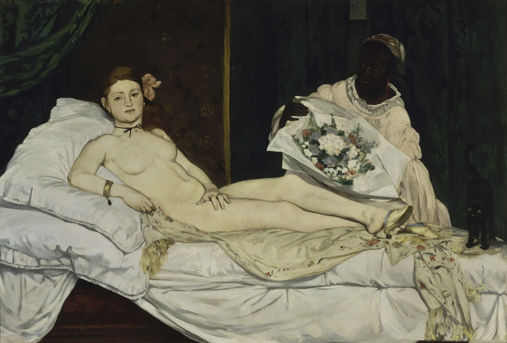

マネは「昔の名画みたいな構図なのに、なぜこんなに現代的で平たく見える？」を探す。まず人物の視線、次に白と黒の大きな色面、最後に背景との奥行きを見る。
マネは「近代絵画の重要人物」「印象派につながる画家」と説明されることが多く、最初は歴史上の位置ばかり気にしていました。でも《オランピア》や《草上の昼食》を見ると、知識がなくてもまず人物の視線が強い。さらに少し離れると、肌、黒い服、背景が大きな色の面として前へ出てきます。「古い構図を知っているのに、わざと今っぽく見せる」というぶつかりが分かると、マネがかなり見やすくなりました。
1. まず「こちらを見ている人」を探す
マネの人物には、鑑賞者を正面から見返すような視線がよく出てきます。《オランピア》の女性、《草上の昼食》の裸婦など、画面の中の物語に没頭しているというより、こちらの存在を知っているように見えます。
視線を感じたら、顔だけでなく身体の向きも見ます。横たわっているのに目だけはこちらへ向く、周囲の人物が別の方向を向く、といったズレが画面に緊張を作ります。

2. 立体的な身体より「白い大きな形」として見る
人物画を見ると、通常は顔や身体の立体感へ目が行きます。マネでは一度、身体を「白っぽい大きな色面」として見てみます。《オランピア》なら白い肌と寝具、黒っぽい背景の対比が強く、人物が奥へ自然に沈むというより、画面の手前へ貼りつくように見える部分があります。
細かな陰影で丸みを丁寧につなぐより、明暗を大きく切り替える。そこに「平たい」と感じる理由があります。上手い／下手ではなく、立体をどう見せるかの約束を変えた、と考えると面白くなります。
3. マネの「黒」を背景扱いしない
黒い服、帽子、背景など、マネでは黒が大きな面積を占めることがあります。黒を「色がないところ」と考えず、どこに置かれているかを見ます。明るい肌や白い服の隣に黒が来ると、境目が強くなり、形がはっきり前へ出ます。
近くで見ると、完全に同じ黒だけではなく、茶や青み、筆の跡が感じられることもあります。暗い色の中の差を探すと、画面が単純な白黒ではなくなります。
4. 「昔の名画の型」に、19世紀の“今”を入れる
マネは過去の巨匠をよく研究しました。《オランピア》は横たわる裸婦という古典的な主題を踏まえながら、理想化された神話の女神ではなく、当時のパリの現実を感じさせる女性として描かれます。《草上の昼食》も古い構図の参照を持ちながら、同時代の服を着た男性と裸婦を同じ場所へ置きます。
初心者が元ネタを全部知る必要はありません。「昔の絵みたいに堂々とした構図なのに、人物や空気が妙に現代的」と感じたら十分。その違和感の後から元になった作品を知ると、マネが何を入れ替えたのかが答え合わせできます。
5. 近くでは「完成した面」より筆の跡が見える
離れて見ると服や肌に見える場所も、近づくと短い筆の跡や、細部を描き切らない部分があります。写真のようにすべてを均一に仕上げるのではなく、必要な場所だけを強く残す感じです。
特に背景や衣服で、輪郭が曖昧になる場所を探します。人はしっかりいるのに、周囲は急に省略される。その差が、画面を現代的で速いものに見せます。
6. 印象派と比べるなら「光」より「画面の平たさ」
マネは印象派の画家たちと深く関わりましたが、モネのように屋外の光の変化を繰り返し追う画家とは少し違います。マネを見るときは、まず色面、黒、人物の視線、現代生活の題材を意識すると比較しやすいです。
そのあとモネやルノワールへ移ると、筆触がさらに細かく分かれ、光の色が画面全体へ広がっていく違いが見えます。「マネ→印象派」を年表だけでなく実物の違いで確認できます。
7. 実物では「近くと遠く」で印象が変わる場所を探す
マネの魅力は、少し離れると人物や場面がはっきり見えるのに、近くでは色面や筆触が前へ出るところです。一作品の前で、まず全体→顔→大きな色面→筆の跡→もう一度全体、と見ると分かりやすいです。
そして最後に「どこが一番現代的に見えた？」を一つ決めます。人物の目かもしれないし、黒の強さ、背景の省略かもしれません。古典を知ってから見るのではなく、まず自分が感じた“少し変”を拾う。それがマネへの入口になります。
昔の型なのに、視線と色は「今」。